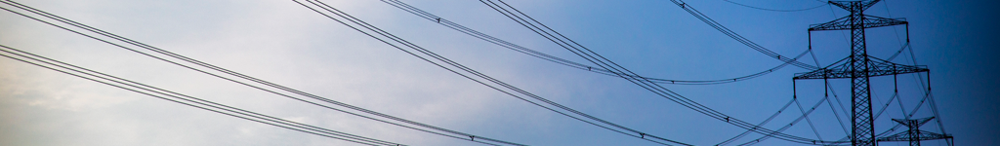

Nabízené služby spoleènosti T&H energo
Poradenství v energetice
Klientùm nabízíme poradenské služby pøi:
analýze vývoje energetického sektoru
analýze pøipravovaných státních a zájmových koncepcí vèetnì reakcí na tyto koncepce
analýze vývoje evropského trhu s elektøinou
modelování energetického sektoru, trhu s energiemi a cen komodit
øešení evropské energetiky jako celku vèetnì komunikace s evropskými institucemi
definici regulatorního prostøedí v energetice a jeho dopadu na danou spoleènost
benchmarkingu regulatorního prostøedí v ÈR
úpravách, aktualizacích a reakcích na energetickou legislativu
komunikaci se státní správou, zájmovými organizacemi a evropskými institucemi
podpoøe získání evropských a státních dotací pro projekty v ÈR
studiích proveditelnosti
Podnikové energetická strategie
Podnikùm specificky nabízíme poradenské služby pøi:
definování firemních strategií a koncepcí
analýze stávajících procesù a doporuèení pro budoucí vývoj
nalezení optimálního øešení pro každou spoleènost z hlediska velikosti, obratu, zájmù
organizaci výbìrových øízení na dodavatele služeb
hodnocení úspìšnosti plánovaných projektù
A pøedevším klademe dùraz na individuální pøístup!
Inženýrské zajištìní projektu
Pøi pøípravì projektu nabízíme:
komplexní inženýrské pokrytí projektu
vypracování studie proveditelnosti projektu
vypracování projektové dokumentace
spolupráci pøi výbìrových øízeních
zajištìní vydání rozhodnutí spojených se stavbou
projednání projektových dokumentací s dotèenými orgány
© 2014. T&H energo | Všechna práva vyhrazena